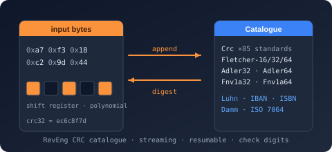

Bodu.IO.Hashing.CheckDigits Namespace
- Package
-
Bodu.IO.Hashing 1.3.0

Purpose
Bodu.IO.Hashing.CheckDigits ships the catalogue of single-character and multi-character check-digit algorithms - Luhn, Damm, Verhoeff, plus the standard catalogues used by financial, retail, securities, and publishing identifiers (IBAN, LEI, EAN, GTIN, UPC, ISBN, ISIN, SEDOL, CUSIP, ABA routing, …). Every algorithm derives from the root CheckValueAlgorithm through one of its three abstract bases - CheckDigitAlgorithm (decimal payload, single check digit), AlphanumericCheckDigitAlgorithm (alphanumeric payload, single check character), or MultiCharCheckDigitAlgorithm (fixed-length multi-character check).
Key types
Generic algorithms - applicable to any identifier shape:
Financial / banking identifiers:
- AbaRoutingNumber - ABA routing number (US).
- Iban - IBAN MOD-97.
- Lei - Legal Entity Identifier (ISO 17442).
Retail / GS1:
Securities:
Publishing:
Encoded identifiers:
ISO 7064:
Example
using Bodu.IO.Hashing.CheckDigits;
// One-shot static helpers: compute the check digit for a body, or validate a full value.
char digit = Luhn.Compute("7992739871"); // '3'
bool ok = Luhn.IsValid("79927398713"); // true
// Multi-character schemes return a string check value.
string ibanCheck = Iban.Compute("DE00370400440532013000"); // "89"
bool ibanOk = Iban.IsValid("DE89370400440532013000"); // true
// Streaming: feed the body in chunks and read the check non-destructively.
var luhn = new Luhn();
luhn.Append("79927");
luhn.Append("39871");
char streamed = luhn.GetCurrentCheckDigit(); // '3'
luhn.Reset();
Notes
- Static one-shots, stateful instances. Every algorithm exposes static
Compute/IsValidhelpers for the common one-shot case; an instance (new Luhn()) carries running state for the streamingAppend/GetCurrentCheckDigit(orGetCurrentCheckDigits/GetCurrentCheckValue) /Resetidiom, so share instances across threads only with external synchronization. - Shaped vs. generic. Identifier-shaped algorithms (
Iban,Cusip,Sedol) validate length, character set, and any embedded structure as well as the check digit; the generic algorithms (Luhn,Damm,Verhoeff) validate only the digit. Pick the shaped algorithm when you have a specific identifier type. - See also: the Check-digits guide, the parent Bodu.IO.Hashing landing page.
Classes
- AbaRoutingNumber
Computes the check digit of a 9-digit American Bankers Association (ABA) routing transit number using the weighted modulus-10 scheme specified by the US Federal Reserve. This class cannot be inherited.
- AlphanumericCheckDigitAlgorithm
Represents the abstract base class from which single-character check-digit algorithms that operate on a wider input alphabet, or whose check character may be the sentinel
'X', derive.
- CheckDigitAlgorithm
Represents the abstract base class from which all decimal check-digit algorithms in this library derive.
- CheckValueAlgorithm
Represents the common root of the check-digit algorithm family, unifying the streaming surface shared by CheckDigitAlgorithm (decimal bodies, single check digit), AlphanumericCheckDigitAlgorithm (alphanumeric bodies, single check character), and MultiCharCheckDigitAlgorithm (multi-character check codes).
- Code39Mod43
Computes the check character of a Code 39 (also known as Code 3 of 9) symbol string using the
modulo 43scheme. This class cannot be inherited.
- Crockford32
Computes the check symbol of a Crockford Base32 encoded value using the
modulo 37scheme defined by Douglas Crockford. This class cannot be inherited.
- Cusip
Computes the check digit of a 9-character Committee on Uniform Securities Identification Procedures (CUSIP) identifier using the Luhn-style weighted modulus-10 scheme specified by the American Bankers Association. This class cannot be inherited.
- Damm
Computes the check digit of a decimal string using the
Dammalgorithm. This class cannot be inherited.
- Ean13
Computes the check digit of a 13-digit European Article Number / Global Trade Item Number-13 barcode using the EAN-13 weighted modulus-10 algorithm. This class cannot be inherited.
- Ean8
Computes the check digit of an 8-digit European Article Number / Global Trade Item Number-8 barcode using the EAN-8 weighted modulus-10 algorithm. This class cannot be inherited.
- Gtin14
Computes the check digit of a 14-digit Global Trade Item Number (GTIN-14) barcode using the GTIN-14 weighted modulus-10 algorithm. This class cannot be inherited.
- Gumm
Computes the check digit of a decimal string using the
Gummalgorithm. This class cannot be inherited.
- Iban
Computes the two-digit check sequence of an International Bank Account Number (IBAN) using the ISO 13616 algorithm atop ISO 7064 MOD 97-10. This class cannot be inherited.
- Isbn10
Computes the check character of a 10-character International Standard Book Number using the ISBN-10 weighted modulus-11 algorithm. This class cannot be inherited.
- Isbn13
Computes the check digit of a 13-digit International Standard Book Number using the ISBN-13 weighted modulus-10 algorithm. This class cannot be inherited.
- Isin
Computes the check digit of a 12-character International Securities Identification Number (ISIN) using the Luhn-based scheme defined by ISO 6166. This class cannot be inherited.
- Iso7064Mod11_2
Computes the single-character check of a decimal string using the ISO 7064
MOD 11-2pure algorithm. This class cannot be inherited.
- Iso7064Mod97_10
Computes the 2-character check code of an alphanumeric string using the ISO 7064
MOD 97-10pure algorithm. This class cannot be inherited.
- Lei
Computes the two-digit check sequence of a Legal Entity Identifier (LEI) as specified by ISO 17442. This class cannot be inherited.
- Luhn
Computes the check digit of a decimal string using the
Luhn(mod 10) algorithm. This class cannot be inherited.
- MultiCharCheckDigitAlgorithm
Represents the abstract base class from which check-digit algorithms that emit a fixed-length multi-character check code - most notably ISO 7064 MOD 97-10 and its derivatives (IBAN, LEI) - derive.
- Sedol
Computes the check digit of a 7-character Stock Exchange Daily Official List (SEDOL) identifier using the weighted modulus-10 scheme defined by the London Stock Exchange. This class cannot be inherited.
- UpcA
Computes the check digit of a 12-digit Universal Product Code (UPC-A) barcode using the UPC-A weighted modulus-10 algorithm. This class cannot be inherited.
- Verhoeff
Computes the check digit of a decimal string using the
Verhoeffalgorithm. This class cannot be inherited.
Enums
- CheckDigitInputAlphabet
Identifies the alphabet from which a check-digit or check-character algorithm accepts its body input.
- CheckDigitOutputAlphabet
Identifies the alphabet from which a single-character check-digit algorithm may emit its check character.